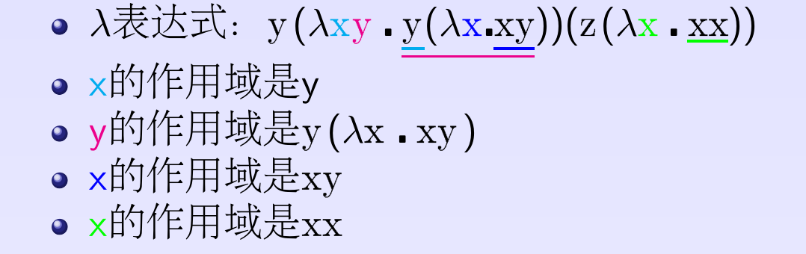
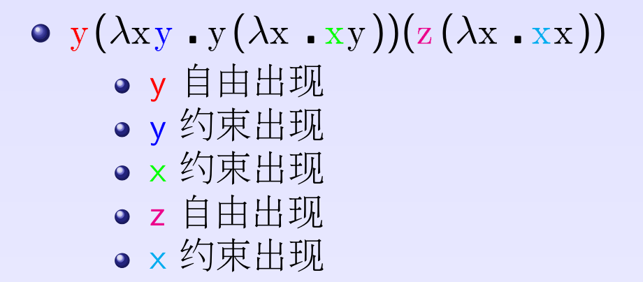
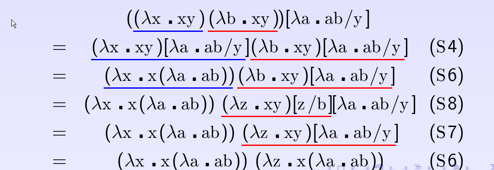
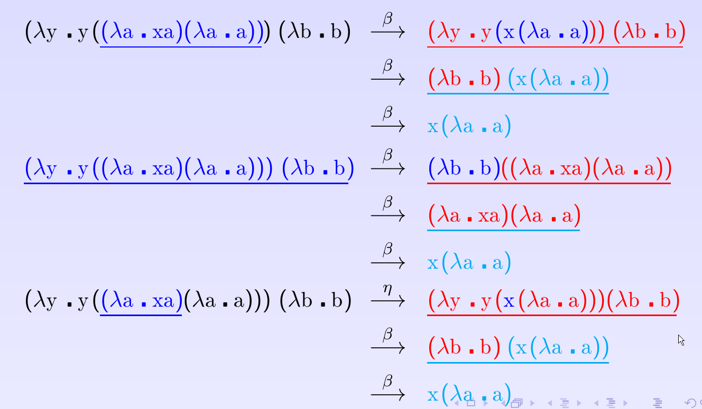
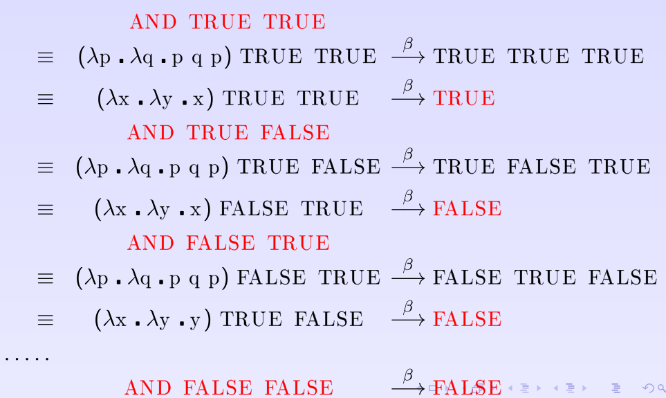

Lambda 演算
Table of Contents
- \(\lambda\) 演算 可看做是一个简单的语义清楚的 形式语言 ，用来解释复杂的 程序设计语言 或者 计算模型
- \(\lambda\) 演算通常包含两部分
- 语法： 合法表达式 （\(\lambda\) 表达式）的形式系统
- 语义： 变换规则 的形式系统
\(\lambda\) 表达式
定义
\(\lambda\) 表达式由 变量名 ， 抽象符号 \(\lambda\) \(\centerdot\) \((\) \()\) 组成
\begin{aligned} <\textrm{$\lambda$表达式}> & := & <\textrm{变量名}> \\ <\textrm{$\lambda$表达式}> & := & (<\textrm{$\lambda$表达式}>\quad<\textrm{$\lambda$表达式}>) \\ <\textrm{$\lambda$表达式}> & := & (\lambda<\textrm{变量名}>.<\textrm{$\lambda$表达式}>) \end{aligned}- 没有类型 ， 没有常量
- 变量名 不仅可以 代表变量 ，还可以 代表函数
优先级规则
- E1 E2 ： 函数调用 , E1 是 函数名 ， E2 是 实参
- 施用型 表达式是 左结合 规则 \[E_1 E_2 E_3 \dots E_n= (((E_1 E_2) E_3) \dots) E_n\]
- \(\lambda\) x.E ： 函数抽象 ， x 是 形参 ， E 是 函数体
- 抽象型 表达式是 右结合 规则 \[\lambda x_1 \centerdot \lambda x_2 \centerdot \dots \lambda x_n \centerdot E = \lambda x_1 \centerdot (\lambda x_2 \centerdot (\dots (\lambda x_n \centerdot E) \dots ) \,)\]
- 复杂例子 \[\underline{\lambda x_1 x_2 \dots x_n} \centerdot E = \lambda x_1 \centerdot \lambda x_2 \centerdot \dots \lambda x_n \centerdot E\] \[\lambda x_1 \centerdot \lambda x_2 \centerdot \dots \lambda x_n \centerdot \underline{E_1 E_2 E_3 \dots E_n} = \lambda x_1 \centerdot \lambda x_2 \centerdot \dots \lambda x_n \centerdot (E_1 E_2 E_3 \dots E_n)\]
子表达式
- 子表达式：设 E 是一个 \(\lambda\) 表达式 ，那 E的子表达式 可以定义为
- 如果 \(E \equiv x\) ，那么 x 就是 E 的子表达式
- 如果 \(E \equiv E1 \; E2\) ，那么 E1 和 E2 就是 E 的子表达式
- 如果 \(E \equiv \lambda x \centerdot E'\) ，那么 \(\lambda x \centerdot E'\) 和 \(E'\) 的子表达式 都是 E 的子表达式
- 如果 \(E \equiv (E')\) ，那么 E' 和 E' 的子表达式 都是 E 的子表达式
- \(SUB(E)\) 表示 E的所有子表达式
自由变量
变量作用域
- 变量的作用域
- \(\lambda x \centerdot E\) 中的变量 x 是 被绑定 的，他的 作用域 是 E中去掉所有形如 \(\lambda x \centerdot E'\) 子表达式的表达式部分
- \(\lambda x \centerdot E\) 中的 \(\lambda x \centerdot\) 可以看作变量的 x 的 定义点 ，在 E 中 x 的作用域 出现的 x 是 变量 x 的使用点
- 例子

自由出现
- \(\lambda\) 表达式中 相同的变量名 ，可以出现在 不同位置 ，他们的 含义可能不同
- 自由出现 ：\(\lambda\) 表达式 E 中的变量名 x 的一次出现成为自由出现，如果 E 中 任何一个 \(\lambda x \centerdot E'\) 的 子表达式 不包含 该出现
- 约束出现 ：\(\lambda\) 表达式 E 中的变量名 x 的一次出现成为约束出现，如果 E 中 存在一个 \(\lambda x \centerdot E'\) 的 子表达式 包含 该出现

自由变量
如果 \(\lambda\) 表达式 E 中 至少包含一个变量 x 的自由出现 ，则称 x 为 E 的 自由变量 ， \(FV(E)\) 表示 \(\lambda\) 表达式 E 的 自由变量集合 ：
- 如果 \(\lambda\) 表达式 E 不包含自由变量 ，即 \(FV(E) = \emptyset\) ，则称 E 为 封闭型 表达式
- 如果 \(\lambda\) 表达式 E 包含自由变量 ，即 \(FV(E) \neq \emptyset\) ，则称 E 为 开型 表达式
计算自由变量
FV计算规则：
- 如果 \(E \equiv x\) , 则 \(FV(E) = \{ x \}\)
- 如果 \(E \equiv E1 E2\) , 则 \(FV(E) = FV(E1) \cup FV(E2)\)
- 如果 \(E \equiv \lambda x \centerdot E'\) , 则 \(FV(E) = FV(E') -\{ x \}\)
- 如果 \(E \equiv (E')\) , 则 \(FV(E) = FV(E')\)
例子
\[ \begin{aligned} E & = &y (\lambda xy \centerdot y ( \lambda x \centerdot x y)) (z (\lambda x \centerdot xx)) \\ FV(E) & = &FV(y (\lambda xy \centerdot y ( \lambda x \centerdot x y))) \cup FV((z (\lambda x \centerdot xx))) \\ & = & FV(y) \cup FV((\lambda xy \centerdot y ( \lambda x \centerdot x y))) \cup FV(z) \cup FV((\lambda x \centerdot xx)) \\ & = & \{ y \} \cup (FV(y(\lambda x \centerdot x y)) - \{ x y\}) \cup \{ z \} \cup (FV(xx) - \{ x\}) \\ & = & \{ y \} \cup \underbrace{(\{ y \} \cup FV(\lambda x \centerdot x y) - \{x y\})}_{\emptyset} \cup \{z\} \cup \emptyset \\ & = & \{y \; z\} \end{aligned}\]
变量替换
定义
\(E\) 和\(E_0\) 是 \(\lambda\) 表达式，\(x\) 是 变量名 ， 替换 \(E[E_0/x]\) 表示把 E 中 所有 x 的自由出现 替换成 \(E_0\)
- 只有 自由出现 的变量可以被替换，而且替换 不应该把变量的 自由 出现变成 约束 出现
规则
- \(E[E_0/x]\) 的计算规则：
- S1. 如果 \(E \equiv x\) , 那么 \(x[E_0/x] = E_0\)
- S2. 如果 \(E \equiv y, x \neq y\) ，那么 \(y[E_0/x] = y\)
- S3. 如果 \(E \equiv (E')\) ， 那么 \((E')[E_0/x] = E'[E_0/x]\)
- S4. 如果 \(E \equiv E_1E_2\) ，那么 \(E_1E_2[E_0/x] = (E_1[E_0/x])(E_2[E_0/x])\)
- S5: 如果 \(E \equiv \lambda x \centerdot E'\) ，那么 \(\lambda x \centerdot E'[E_0/x] = \lambda x \centerdot E'\)
\(E \equiv \lambda y \centerdot E', x \neq y\)
- S6: \(E_0\) 中 没有 y 的自由出现 ， 直接对 E' 进行替换 ，如果 \(y \not \in FV(E_0)\) , 那么 \((\lambda y\centerdot E') [E_0/x] = \lambda y \centerdot(E'[E_0/x])\)
- S7: \(E'\) 中 没有x的自由出现 ，则 E' 没有可替换 ，如果 \(x \not \in FV(E')\) , 那么 \((\lambda y \centerdot E')[E_0/x] = \lambda y\centerdot E'\)
- S8: \(E_0\) 中 有y的自由出现 ，\(E'\) 中 有x的自由出现 ，则需要对 E 中的 y 进行改名 ，改变后的变量名 z 在 \(E_0\) 不存在自由出现
\[\begin{aligned} &y \in FV(E_0) \wedge x \in FV(E'), & \\ & (\lambda y \centerdot E') [E_0/x] = \lambda z (E'[z/y] [E_0/x]), & z \not \in FV(E_0), z \neq y \end{aligned}\]
例子
- 简单例子
\[\begin{aligned} x[xy/x] = & xy & (S1) \\ y[M/x] = & y & (S2) \\ (\lambda x \centerdot xy)[E/x] = & \lambda x \centerdot xy & (S3;S5) \\ (\lambda x \centerdot xz)[w/y] = & \lambda x \centerdot xz & (S3;S7) \end{aligned}\]
- 复杂例子

变换系统
- 变换系统 给出了如何从一个 \(\lambda\) 表达式 转换成和其等价 的另一个 \(\lambda\) 表达式
- 变换系统定义了 \(\lambda\) 演算的 语义
- 不同的 \(\lambda\) 演算系统有不同的变换规则
- \(\alpha\) 变换 ： 绑定的变量名称不重要
- \(\beta\) 归约 ：实际上定义了 函数调用
- \(\eta\) 变换：函数的 外延等价性
\(\alpha\) 变换
设 E 是 \(\lambda\) 表达式，x，y是变量名，如果 \(y \not \in FV(\lambda x \centerdot E)\) ，则称下面变换为 \(\alpha\) 变换 \[\lambda x \centerdot E \stackrel{\alpha}{\longrightarrow} \lambda y \centerdot(E[y/x])\]
- \(\alpha\) 变换只是 改变 了 \(\lambda x \centerdot E\) 的 形参名
- 新的形参不允许是函数体的自由变量 ，否则会改变函数含义
例子
- 合法的 \(\alpha\) 变换 \[\begin{aligned} \lambda x \centerdot (zx) & \stackrel{\alpha}{\longrightarrow} & \lambda y \centerdot (zy) \\ \lambda x \centerdot ((\lambda y \centerdot yx) x) & \stackrel{\alpha}{\longrightarrow} & \lambda z \centerdot ((\lambda y \centerdot yz) z) \end{aligned}\]
- 非法的 \(\alpha\) 变换： \[\begin{aligned} \lambda x \centerdot (zy) & \stackrel{\alpha}{\longrightarrow} & \lambda y \centerdot (zy) \\ \lambda x \centerdot (z (\lambda y \centerdot x)) & \stackrel{\alpha}{\longrightarrow} & \lambda y \centerdot (z (\lambda y \centerdot y)) \end{aligned}\]
\(\beta\) 变换
设 \((\lambda x \centerdot E)\) 和 \(E_0\) 是 \(\lambda\) 表达式，则称下面的变换为 \(\beta\) 变换 \[(\lambda x \centerdot E)E_0 \stackrel{\beta}{\longrightarrow} E[E_0/x]\]
- \(\beta\) 变换事实上定义了 函数调用 的语义
- \(\beta\) 变换是 最重要 的一个变换
例子
- \((\lambda x \centerdot xy) x \stackrel{\beta}{\longrightarrow} xy\)
- \((\lambda x \centerdot xx) y \stackrel{\beta}{\longrightarrow} yy\)
- \[\begin{aligned} \underline{(\lambda x \centerdot (\lambda y \centerdot (\lambda z \centerdot xyz)))A}BC & & \\ & \stackrel{\beta}{\longrightarrow} & \underline{(\lambda y \centerdot (\lambda z \centerdot Ayz))B}C \\ & \stackrel{\beta}{\longrightarrow} & \underline{(\lambda z \centerdot ABz)C} \\ & \stackrel{\beta}{\longrightarrow} & ABC \end{aligned}\]
\(\eta\) 变换
设 \(\lambda x \centerdot Mx\) 是一个 \(\lambda\) 表达式，且 \(x \not \in FV(M)\) ，则称下面的变换是 \(\eta\) 变换 \[(\lambda x \centerdot Mx) \stackrel{\eta}{\longrightarrow} M\]
- 函数的 外延等价性 ： \(\forall x, f(x) = h(x) \Longrightarrow f \equiv h\)
- \(\eta\) 变换不是 \(\lambda\) 演算系统必须的变换
例子
- 合法变换：\(\lambda x \centerdot (\lambda y \centerdot yy) x \stackrel{\eta}{\longrightarrow}(\lambda y \centerdot yy)\)
- 非法变换：\(\lambda x \centerdot (\lambda y \centerdot yx) x \stackrel{\eta}{\nrightarrow} (\lambda y \centerdot yx)\)
- 与 \(\beta\) 变换结合：\[\forall y, x \not \in FV(M), (\lambda x \centerdot Mx)y \stackrel{\beta}{\longrightarrow} My\]
归约和范式
归约：定义
- \((\lambda x \centerdot E)E_0\) 被称为 \(\beta\) 基
- \((\lambda x \centerdot Mx)\) 被称为 \(\eta\) 基
- \(\beta\) 基和 \(\eta\) 基被统称为 归约基
对表达式中某一归约基实行某种变换 被称为 归约
- 表达式可以 同时有多个归约基
- 归约过程不唯一 ， 不同的归约过程得到的结果不一定相同
不同的归约过程得到相同的结果

不同的归约过程得到不同的结果
- 归约过程1 \[\begin{aligned} \underline{(\lambda x \centerdot y) ((\lambda x \centerdot xx) (\lambda x \centerdot xx))} & \stackrel{\beta}{\longrightarrow} & y[((\lambda x \centerdot xx) (\lambda x \centerdot xx))/x] \\ & \stackrel{\beta}{\longrightarrow} & y \end{aligned}\]
- 归约过程2 \[\begin{aligned} (\lambda x \centerdot y) (\underline{(\lambda x \centerdot xx) (\lambda x \centerdot xx)}) & \stackrel{\beta}{\longrightarrow} & (\lambda x \centerdot y) (\underline{(\lambda x \centerdot xx) (\lambda x \centerdot xx)}) \\ & \stackrel{\beta}{\longrightarrow} & (\lambda x \centerdot y) (\underline{(\lambda x \centerdot xx) (\lambda x \centerdot xx)}) \\ & & \cdots \end{aligned}\]
范式：定义
如果 E 是一个 \(\lambda\) 表达式，且 E 不包含任何归约基 ，这样的表达式被称为 范式
- 如果一个表达式经过 有限次归约 能成为范式，则称该表达式 有范式
- 最左归约 ：按归约基的 \(\lambda\) 符号出现顺序， 每次归约 最左边的归约基
- \(X \Rightarrow Y\) ：经过有限次( \(\alpha\) , \(\beta\) , \(\eta\) )变换，X 归约成 Y
- \(X \Rightarrow^\gamma Y\) ：经过有限次( \(\beta\) , \(\eta\) )变换，X 归约成 Y
- - \(X \Rightarrow^\alpha Y\) ：经过有限次 \(\alpha\) 变换， X 归约成 Y
范式：性质
- 如果 有范式 ，则 在 \(\alpha\) 变换下一定唯一
- 如果 有范式 ， 则 最左归约法 一定能归约出范式
- 范式 是 \(\lambda\) 表达式具有 相同解释 的 最简表达形式
- \(\lambda\) 表达式 不一定有范式 ，例子见上面
简单类型
邱奇数
\[\begin{aligned} 0 & := & \lambda f \centerdot \lambda x \centerdot x \\ 1 & := & \lambda f \centerdot \lambda x \centerdot f \; x \\ 2 & := & \lambda f \centerdot \lambda x \centerdot f \; (f \;x) \\ 3 & := & \lambda f \centerdot \lambda x \centerdot \underbrace{f \; (f \; (f}_3 \;x)) \\ & \dots & \end{aligned}\]
- 邱奇数是一个 高阶函数 ，它的 参数 是一个 单参数的函数f ， 返回值 也是一个 单参数的函数
- 邱奇数０ 是一个 恒等 函数
- 邱奇数ｎ 是以 函数ｆ 作为参数并以 f的 n次复合调用 的函数 作为返回值的函数
邱奇数：运算
- SUCC ： 后继函数 ，假设 \(n\) 一个 邱奇数 ，SUCC函数 对 \(n\) 进行 \(\beta\) 归约 等价于 \(n + 1\) 的邱奇数 定义 \[SUCC := \lambda n \centerdot \lambda f \centerdot \lambda x \centerdot f \; ((n \; f) \; x)\]
- PLUS： 加法函数 \[\begin{aligned} PLUS & := & \lambda m \centerdot \lambda n \centerdot \lambda f \centerdot \lambda x \centerdot (m \; f) \;((n \;f) \; x) \\ PLUS & := & \lambda m \centerdot \lambda n \centerdot (m \; SUCC) \; n \end{aligned}\]
- MULT： 乘法函数
\[\begin{aligned} MULT & := & \lambda m \centerdot \lambda n \centerdot \lambda f \centerdot \lambda x \centerdot ((m \; (n \; f)) x) \end{aligned}\]
逻辑和谓词
逻辑运算
- 布尔值： \[\begin{aligned} TRUE & := & \lambda x \centerdot \lambda y \centerdot x \\ FALSE & := & \lambda x \centerdot \lambda y \centerdot y \end{aligned}\]
- 逻辑运算： \[\begin{aligned} AND & := & \lambda p \centerdot \lambda q \centerdot (p \; q \; p) \\ OR & := & \lambda p \centerdot \lambda q \centerdot (p \; p \; q) \\ NOT & := & \lambda p \centerdot (p \; FALSE \; TRUE) \\ IFTHENELSE & := & \lambda p \centerdot \lambda a \centerdot \lambda b \centerdot (p \; a \; b) \end{aligned}\]
例子

谓词
谓词 是 返回布尔值的函数
- ALWAYSFALSE：永远返回 FALSE \[ALWAYSFALSE := \lambda x \centerdot FALSE\]
- ISZERO： 当且仅当其参数为邱奇数０ 时返回 TRUE ，否则返回 FALSE \[ISZERO := \lambda n \centerdot ((n \; ALWAYSFALSE) \; TRUE)\]
FALSE等价于邱奇数０的定义
有序对
有序对可以用 TRUE 和 FALSE 来定义 \[\begin{aligned} CONS & := & \lambda x \centerdot \lambda y \centerdot \lambda f \centerdot f \; x \; y \\ CAR & := & \lambda p \centerdot p \; TRUE \\ CDR & := & \lambda p \centerdot p \; FALSE \\ NIL & := & \lambda x \centerdot TRUE \\ NULL? & := & \lambda p \centerdot p(\lambda x \centerdot \lambda y \centerdot FALSE) \\ \end{aligned}\]
- LIST： 列表 函数，可以被定义成 空列表NIL ，或者 CONS 一个 表达式 和 一个 列表
- ATOM?：判断 变量是否原子类型 函数，当某个变量的 CDR是NIL 的时候，可以认为这个变量是 原子类型
例子
- PRED： 前驱元 函数
- 先定义一个辅助过程 \(\Phi\) 把一个有序对 (m, n) 映射到另一个有序对 (n, n + 1)
通过这个辅助过程和上面给出的 CAR ， CONS 可以定义 PRED
\[\begin{aligned} \Phi & := & \lambda x \centerdot CONS \; (CDR \; x) \; (SUCC (CDR \; x)) \\ PRED & := & \lambda n \centerdot CAR (n \; \Phi \; (CONS \; ZERO \; ZERO)) \end{aligned}\]
- SUB： 减法 函数，根据 PRED 可以定义
\(SUB := \lambda m \centerdot \lambda n \centerdot (n \; PRED) \; m\)
- EQ： 比较相等 函数，根据 SUB 可以定义 \[\begin{aligned} LEQ & := & \lambda m \centerdot \lambda n \centerdot \; ISZERO \; (SUB\;m\;n) \quad \textrm{less than or equal} \\ EQ & := & \lambda m \centerdot \lambda n \; AND \; (LEQ \; m \; n) \; (LEQ \; n \; m) \end{aligned}\]
实现递归
Y不动子
递归是用 函数自身去定义函数 ，\(\lambda\) 演算的函数都是无名函数，表面看不支持递归，但是可以 构造特殊的函数 来实现递归
\[\begin{aligned} Y & := & \lambda g \centerdot (\lambda x \centerdot g(x \;x)) \; (\lambda x \centerdot g(x \;x)) \\ YG & \equiv & (\lambda x \centerdot G(x \;x)) \; (\lambda x \centerdot G(x \;x)) \\ YG & \equiv & G (\underbrace{(\lambda x \centerdot G(x \;x)) \; (\lambda x \centerdot G(x \;x))}_{YG}) \\ YG & \equiv & G(YG) \end{aligned}\]
YG 被称为 G 的一个 不动点 ，Y 被称为 不动子
任何递归函数都可以被看成是另一个函数的不动点
用Y不动子计算阶乘
\[G := \lambda r \centerdot \lambda n \centerdot (IF \; ISZERO(n) \; 1 \; (MULT \; n \; (r \; (SUB \; n \;1))))\]
定义一个合适的函数G（使用一个额外的参数来描述递归的 lambda 表达式） 对这个函数 G 进行不动子求值就相当于调用递归
\[\begin{aligned} & (YG) \; 4 & \\ & = & (G \; (YG)) \; 4 \\ & = & (\underbrace{(\lambda r \centerdot \lambda n \centerdot (IF \, ISZERO(n) \, 1 \, (MULT \, n \, (r \, (SUB \, n \,1)))))}_G \; YG) \; 4 \\ & = & (\lambda n \centerdot (IF \; ISZERO(n) \; 1 \; (MULT \; n ((YG) \; (SUB \; n \; 1))))) \;4 \\ & = & IF \; ISZERO(4) \; 1 \; \underline{(MULT \; 4 \; ((YG) \; (SUB \;4 \;1)))} \\ & = & MULT \; 4 \; ((YG) \;3) \\ & \dots & \\ & = & MULT \; 4 \; (MULT \; 3 \; (MULT \; 2 \; (MULT \; 1 \; ((YG) 0)))) \end{aligned}\]
现在计算 ((YG) 0) :
\[\begin{aligned} & (YG) \; 0 & \\ & = & (G \; (YG)) \; 0 \\ & = & (\underbrace{(\lambda r \centerdot \lambda n \centerdot (IF \, ISZERO(n) \, 1 (MULT \, n (r (SUB \, n \,1)))))}_G YG) \, 0 \\ & = & (\lambda n \centerdot (IF \; ISZERO(n) \; 1 \; (MULT \; n ((YG) \; (SUB \; n \; 1))))) \;0 \\ & = & IF \; ISZERO(0) \; \underline{1} \; (MULT \; 0 \; ((YG) \; (SUB \;0 \;1))) \\ & = & 1 \end{aligned}\]
最终可以得到： \[\begin{aligned} & (YG) \; 4 & \\ & = & MULT \; 4 \; (MULT \; 3 (MULT \; 2 \; (MULT \; 1 \; 1))) \\ & = & 24 \end{aligned}\]
\(\lambda\) 计算模型
- \(\lambda\) 演算可以描述复杂计算， 计算能力等价于图灵计算模型
- 给定２个 \(\lambda\) 表达式，如果两者等价则输出 TRUE，反之则输出 FALSE。这是第一个被证明 没有算法可以解决 的问题
解释器
quote，atom，cons，car，cdr，eq，cond 是 LISP 的 7个原始操作符
- quote ： 引用 函数，它的自变量不被求值, 而是作为整个表达式的值返回
- cond： 条件 函数，可以由 IFTHENELSE 定义
- atom，cons，car，cdr，eq：已经被定义
- 用这7个操作符可以写出最原始版本的 eval 函数，也就是 最简单的解释器
\(\lambda\) 计算模型扩充
\(\lambda\) 演算 实际使用很不方便
- 扩充表达式
- 常数：TRUE，FALSE，整数
- 标准函数：ADD，SUB，MULT，CONS，CAR，CDR …
- 条件表达式：COND((P1 E1) (P2 E2))
- let表达式：(LET ((V1 E1)) E)
- 扩充变换系统
- 扩充数据类型：INT，REAL，BOOLEAN
let表达式
\[(let ((x \quad E_0)) \quad E_1) \equiv (\lambda x \centerdot E_1) E_0\]
把 \(E_1\) 中的变量 x 的值绑定为 \(E_0\)
引入let表达式后 \(\lambda\) 演算就有了2种变量
- \(\lambda\) 变量： 形参 变量
- let变量：过程体内的 临时 变量